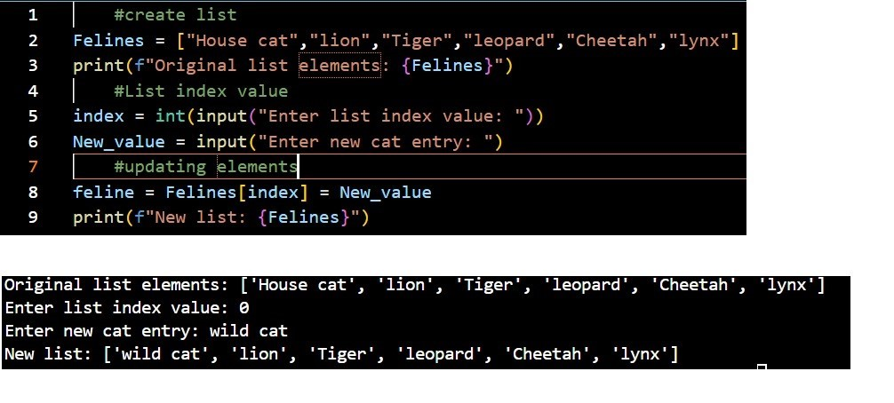
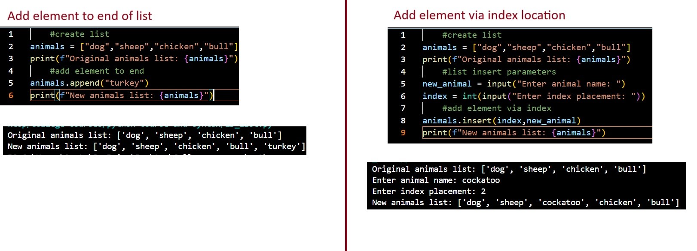
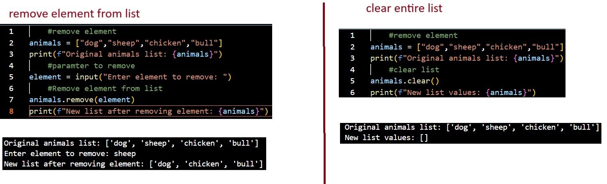
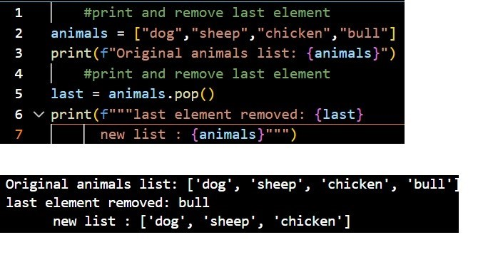
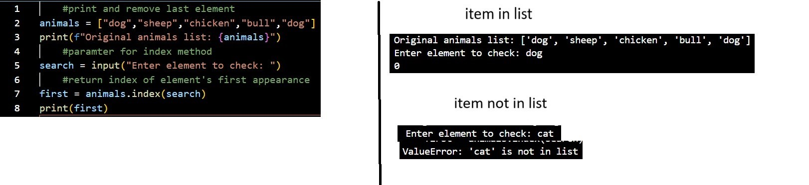
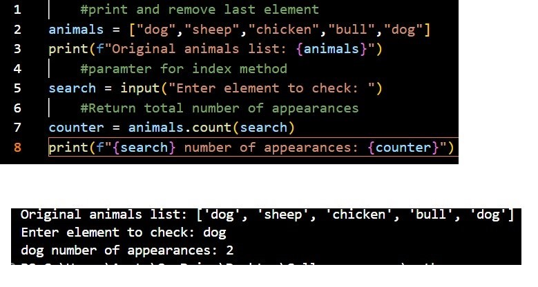
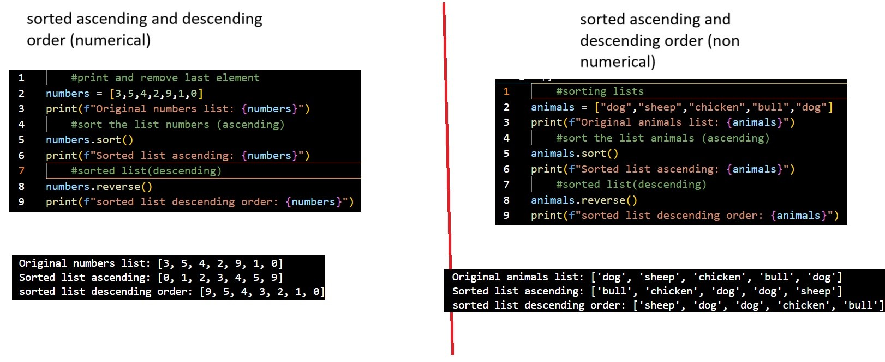

Create List and access elements

Create List and access elements
updating element

Create 2D list, access inner list set and inner list elements

Add elements to list

Remove element(s) from list

poping an element from a list

retrieve index value of element

counter for element appearences

Sorting lists
